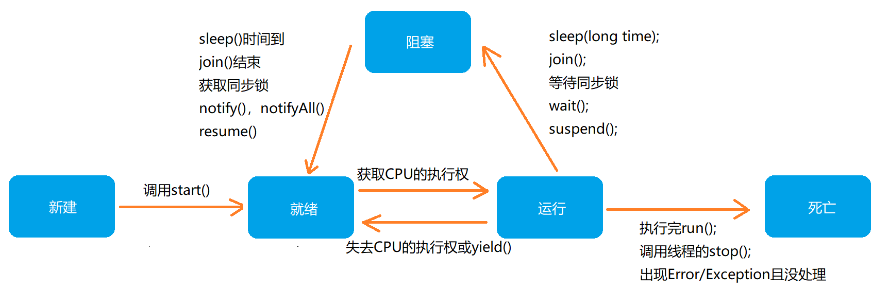
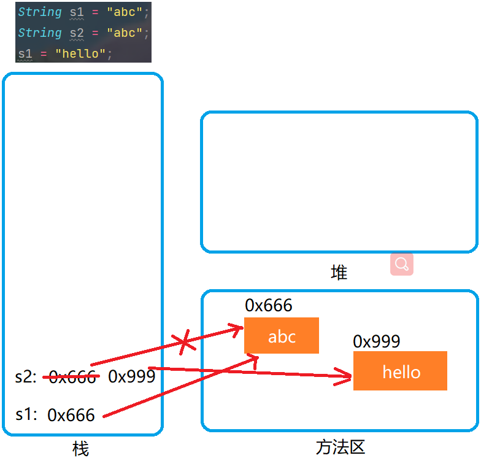
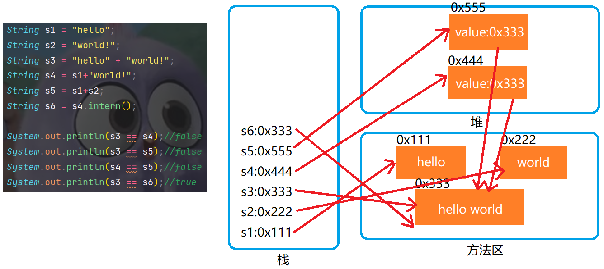

D11M9
异常
异常体系结构：
java.lang.Throwable
|-----java.lang.Error:一般不编写针对性的代码进行处理
|-----java.lang.Exception:可以进行异常的处理
|-----编译时异常
|-----IOException
|-----ClassNotFoundException
...
|-----运行时异常
|-----NullPointException
|-----ClassCastException
...
异常处理机制
- try-catch-finally
- throws
try-catch-finally：
- finally可选
- catch中的异常类型如果满足子父类关系，则要求子类一定声明在父类的上面
- 常用的异常处理方式(目前)：
- String getMessage()
- printStackTrace()
- finally中声明的是一定会被执行的代码，即使catch中又出现异常、try中有return、catch中有retucn等情况
- 像数据库连接、输入输出流、网络编程Socket等资源、JVM是不能自动回收的，我们需要自己手动的进行资源的释放，此时资源释放，就在finally中进行
throws
- throws+异常类型，写在方法的声明出，指名此方法执行时，可能会抛出的异常类型
- throws只是将异常抛给了方法的调用者，并没有真正的处理异常，抛到最上面是JVM
手动抛出异常：throw new 异常();
自定义异常类
- 继承于现有的异常结构(RuntimeException/Exception)
- 仿照原码重载构造器、UID
多线程(非常重要)
基本概念：
- 程序：是为完成特定任务，用某种语言编写的一组指令的集合，即指 一段静态的代码 ，静态对象
- 进程：是
程序的一次执行过程
，或是
正在运行的一个程序
，是一个动态的过程
- 进程作为资源分配的单位， 系统在运行时会为每个进程分配不同的内存区域(堆和方法区)
- 线程：线程可进一步细化为线程，是一个程序内部的一条执行路径
- 若一个进程同一时间并行执行多个线程，就是支持多线程的
- 线程作为调度和执行的单位， 每个线程拥有独立的运行栈和程序计数器 ，线程切换的开销小
- 一个进程中的多个线程共享相同的内存单元/内存地址空间，但是这样共享数据可能会带来安全的隐患
单核CPU和多核CPU的理解
- 单核CPU，其实是一种假的多线程，因为在一个时间单元内，也只能执行一个线程的任务，多核CPU才是真正意义上的多线程
- 多核CPU可以更好的发挥多线程的效率
- 一个Java应用程序(Java.exe)，至少有三个线程：main()主线程、gc()垃圾回收线程、异常处理线程，当然如果发生异常会影响主线程
并发与并行
- 并行：多个CPU同时执行多个任务
- 并发：一个CPU(常用时间片)同时执行多个任务，在多个任务中快速切换，工作效率取决于CPU主频
创建多线程
方式1：继承于Thread类，重写run方法，创建子类的对象，调用start方法
class MyThread extheds Thread{
private static int tick = 10;
public void run(){
sout("this is my thread!");
}
}
public class Demo{
public static void main(String[] args){
Thread thread1 = new MyThread();
Thread thread2 = new MyThread();
Thread thread3 = new MyThread();
//这三个线程共享tick数据
thread1.start();//this is my thread!
thread2.start();
thread3.start();
}
}
方式2：实现Runnable接口，实现抽象方法run，创建实现类的对象，将此对象作为参数传递到Thread类的构造器中创建Thread的实例，调用实例的start方法
class MyThread implements Runnable{
private int tick = 10;
@Override
public void run(){
sout("this is my thread!");
}
}
public class Demo{
public static void main(String[] args){
MyThread mythread = new MyThread();
Thread thread1 = new Thread(mythread);
Thread thread2 = new Thread(mythread);
Thread thread3 = new Thread(mythread);
//这三个线程共享tick数据
thread1.start();
thread2.start();
thread3.start();
}
}
线程的常用方法
| void start() | 启动当前线程 |
|---|---|
| void run() | 将创建的线程要执行的操作声明在此方法中 |
| static Thread currentThread() | 返回执行当前代码的线程 |
| String getName() | 获取当前线程的名字 |
| void setName(String name) | 设置当前线程的名字 |
| static void yield() | 释放当前CPU的执行权 |
| void join() | 在线程a中调用线程b的join()，此时线程a就进入了阻塞状态，直到线程b完成执行完以后，线程a才结束阻塞状态 |
| void stop() | 已过时，强制结束当前线程 |
| static void sleep(long millis) | 让当前线程睡眠，在睡眠期间，当前线程处于阻塞状态 |
| boolean isAlive() | 判断当前线程是否存活 |
线程的调度
线程的优先级
- MAX_PRIORITY:10
- NORM_PRIORITY:5 ---> 默认优先级
- MIN_PRIORITY:1
如何获取和设置当前线程的优先级
- getPriority();//获取线程的优先级
- setPriority(int p);//设置线程的优先级
说明：高优先级的线程要抢占低优先级CPU的执行权，但是从概率上来讲，高优先级的线程高概率的情况下被执行，并不意味着只有当高优先级的线程执行完以后，低优先级的线程才执行
线程的生命周期
JDK中用Thread.State内部类定义了线程的几种状态：NEW，RUNNABLE，BLOCKED，WAITING，TIMED_WAITING，TERMINATED；新建，就绪，运行，阻塞，死亡
同步代码块处理实现Runnable接口，继承Thread类的线程安全问题
synchronized(同步监视器){
//需要被同步的方法
}
- 操作共享数据的代码，即为需要被同步的代码
- 同步监视器：俗称同步锁，谁拿锁谁操作代码，任何一个类的对象都可以充当锁
- 锁的要求：多个线程必须要共用同一把锁
- 同步的方式解决了线程的安全问题，但是在操作同步代码块时，只能有一个线程参与，相当于是一个单线程的过程，效率低
- 实现类的同步监视器可以用this；子类的同步监视器可以用类本身
D12M9
同步方法处理实现Runnable接口，继承Thread类的线程安全问题
public synchronized test(){
//需要被同步的方法
};
- 同步方法仍然涉及到同步监视器，只是不需要我们显示的声明
- 非静态的同步方法，同步监视器是this；静态的同步方法，同步监视器是当前类本身
线程安全的单例模式(懒汉式)
class SingletonTest {
private static SingletonTest st = null;
private SingletonTest(){};
public SingletonTest getST(){
//方式1 --- 效率稍差
synchronized(SingletonTest.class){
if(st == null) st = new SingletonTest();
}
//方式2
if(st == null){
synchronized(SingletonTest.class){
if(st == null) st = new SingletonTest();
}
}
return st;
}
}
死锁
理解：不同的线程分别占用对方需要的同步资源不放弃，都在等待对象放弃自己需要的同步资源，就形成了线程的死锁
说明：出现死锁后，不会出现异常，不会出现提示，只是所有的线程都处于阻塞状态，无法继续；我们使用同步时，要避免出现死锁
线程安全处理方式三：Lock锁 ---JDK5.0新增
- JDK5.0开始，Java提供了更强大的线程同步机制 --- 通过显式定义同步锁对象来实现同步，同步锁使用Lock对象充当
- Java.util.concurrent.locks.Lock接口是控制多个线程对共享资源进行访问的工具
- ReentrantLock类实现了Lock，它拥有与synchronized相同的并发性和内存语义，在实现线程安全的控制中，常用的是ReentrantLock，可以显式加锁、释放锁
使用步骤：创建ReentrantLock对象、使用try包围同步代码，在try的开头开启Lock对象的lock()方法，在finally中调用Lock对象的unlock()方法
面试题：synchronized与Lock的异同？
- 相同：二者都是用来解决线程安全问题
- 不同：
- synchronized机制在执行完相应的同步代码以后，自动的释放同步监视器；Lock需要手动启动同步和手动结束同步
- synchronized有代码块锁和方法锁；Lock只有代码块锁
- 使用Lock锁，JVM将花费较少的时间来调度线程，性能更好，并且具有更好的扩展性(提供更多的子类)
优先使用顺序：Lock ---> 同步代码块(已经进入了方法体，分配了相应资源) ---> 同步方法(在方法体之外)
多线程同步机制练习
package com.zzl.exer;
/*
* 银行有一个账户，有两个储户分别向同一个账户存3000元，每次存1000，存3次，每次存完打印余额
* */
import java.util.concurrent.locks.ReentrantLock;
/**
* @author zzl
* @create 2022/9/12 下午 4:03
*/
public class AccountTest {
public static void main(String[] args) {
Account account = new Account();
Customer customer = new Customer(account);
Thread ac1 = new Thread(customer);
Thread ac2 = new Thread(customer);
ac1.setName("ZZL");
ac2.setName("HSW");
ac1.start();
ac2.start();
}
}
class Account {
private double balance;
private ReentrantLock lock = new ReentrantLock();
public Account() {
this.balance = 0;
}
public Account(double balance) {
this.balance = balance;
}
public void deposit(double amt) {
try {
lock.lock();
if (amt > 0) {
balance += amt;
}
try {
Thread.sleep(1000);
} catch (InterruptedException e) {
e.printStackTrace();
}
System.out.println(Thread.currentThread().getName() + "正在存钱，存后余额还有" + this.balance);
}finally{
lock.unlock();
}
}
}
class Customer implements Runnable {
private Account acc;
public Customer(Account acc) {
this.acc = acc;
}
@Override
public void run() {
for (int i = 0; i < 3; i++) {
acc.deposit(1000);
}
}
}
线程的通信
wait()：当前线程就进入阻塞状态，并释放同步监视器
notify()：会唤醒被wait的一个线程，如果有多个线程被wait，就会唤醒优先级高的那个线程
notifyAll()：会唤醒所有被wait的线程
使用前提：这三个方法必须使用在同步代码块或同步方法中，Lock如果想用线程通信需要用别的方式
这三个方法的调用者必须是同步代码块或同步方法中的同步监视器，如果不是同步监视器发起的调用会出现异常
//一个简单的小demo
//涉及的三个方法：wait()、notify()、notifyAll()
//使用两个线程交替打印1-100
class Number implements Runnable {
private int number = 1;
@Override
public void run() {
while (true) {
synchronized (this) {
notify();
if (number <= 100) {
System.out.println(Thread.currentThread().getName() + ":" + number);
number++;
try {
wait();//一旦执行wait，就会释放锁，但是sleep不会
} catch (InterruptedException e) {
e.printStackTrace();
}
} else break;
}
}
}
}
sleep()与wait()的异同(面试题)
相同点：一旦执行方法，都可以让线程进入阻塞状态
不同点：
- 两个方法声明的位置不同：Thread类中声明的sleep()，Object类中声明的wait()
- 调用的范围不同：sleep可以在任何需要的场景下调用，wait方法必须由同步监视器调用，必须在同步代码块或同步方法中调用
- 关于是否释放同步监视器：如果两个方法都用在同步代码块或同步方法中，sleep方法不释放，wait方法释放
创建多线程方式三(实现Callable接口，JDK5.0新增)
与使用Runnable接口相比，Callable接口功能更加强大
- 相比run()方法，可以有返回值
- 方法可以抛出异常
- 支持泛型的返回值
- 需要借助FutureTask类，比如获取返回值
Future接口
- 可以对具体Runnable、Callable任务的执行结果进行取消、查询是否完成、获取结果等
- FutureTask是Future接口的唯一实现类
- FutureTask类同时实现了Runnable、Future接口，他既可以作为Runnable被线程执行，又可以作为Future得到Callable的返回值
//1.创建一个Callable接口的实现类
//2.实现call方法，将此线程要执行的操作声明在此方法中
//3.创建一个Callable接口实现类的对象
//4.将此Callable接口实现类的对象作为参数传递到FutureTask构造器中，得到FutureTask的对象
//5.将FutureTask的对象作为参数传递到Thread的构造器中，得到Thread的对象并调用start方法
//6.通过FutureTask的get方法获取call方法的返回值
public class CallableTest {
public static void main(String[] args) {
CallableImpl callable = new CallableImpl();
FutureTask<Integer> task = new FutureTask<>(callable);
Thread thread = new Thread(task);
thread.start();
try {
Integer integer = task.get();
System.out.println(integer);
} catch (InterruptedException e) {
e.printStackTrace();
} catch (ExecutionException e) {
e.printStackTrace();
}
}
}
class CallableImpl implements Callable<Integer> {
@Override
public Integer call() throws Exception {
int sum = 0;
for (int i = 0; i < 100; i++) {
if (i % 2 == 0) sum += i;
}
return sum;
}
}
创建多线程方式四(使用线程池，JDK5.0新增)
使用背景：经常创建和销毁、使用量特别大的资源
思路：提前创建好多个线程，放入线程池中，使用时直接拿出，用完后放回池中，可以避免频繁创建销毁，实现重复利用
好处：提高响应速度、降低资源消耗、便于线程管理
package com.zzl.exer;
import java.util.concurrent.*;
public class ThreadPool {
public static void main(String[] args) throws ExecutionException, InterruptedException {
//提供指定数量的线程池
ExecutorService service = Executors.newFixedThreadPool(10);
//设置线程池的属性
ThreadPoolExecutor executor = (ThreadPoolExecutor)service;
executor.setCorePoolSize(15);//设置核心池的大小
executor.setMaximumPoolSize(5);//最大线程数
//执行指定线程的操作，需要提供Runnable接口或Callable接口实现类的对象
service.execute(new RunnableImpl());//适用于Runnable接口的实现类
Future<Integer> f = service.submit(new CallableImpl2());//适用于Callable接口的实现类
System.out.println(f.get());
//关闭连接池
service.shutdown();
}
}
class RunnableImpl implements Runnable{
@Override
public void run() {
for (int i = 0; i <= 100; i++) {
if(i%2 == 0)
System.out.println(Thread.currentThread().getName()+":"+i);
}
}
}
class CallableImpl2 implements Callable<Integer>{
int sum = 0;
@Override
public Integer call() throws Exception {
for (int i = 0; i <= 100; i++) {
if(i%2 == 0)
sum += i;
System.out.println(Thread.currentThread().getName()+":"+i);
}
return sum;
}
}
D13M9(常用类)
String类
特性：
- String声明为final，不可被继承
- String实现了Serializable接口，表示字符串是支持序列化的；实现了Comparable接口，表示String可以比较大小
- String内部定义了final char[] value用于存储字符串数据；String代表不可变的字符序列
- 通过字面量的方式给一个字符串赋值，此时字符串值声明在字符串常量池中
- 字符串常量池不会存储相同内容的字符串
不可变性：
String不同实例化方式的对比
- 通过字面量定义的方式
- 通过new+构造器的方式
String s = new String("abc");方式创建对象，在内存中创建了几个对象？ (面试题)
两个，一个是堆空间中new的结构，另一个是char[]对应的常量池中的数据("abc")
String不同拼接操作的对比
注意：常量与常量拼接结果在常量池；只要拼接中有一个是变量，结果就在堆中；调用intern方法，返回值就在常量池中
面试题
public class StringTest{
String str = new String("good");
char[] ch = {"t", "e", "s", "t"};
public void change(String str, char ch[]){
str = "test ok";
ch[0] = "b";
}
public static void main(){
StringTest ex = new StringTest();
ex.change(str, ch);
sout(ex.str);//good
sout(ex.ch)//best
}
}
String常用方法
| int length() | 获取字符串长度 |
|---|---|
| char charAt(int index) | 返回索引处的字符 |
| boolean isEmply() | 判断是否为空 |
| String toLowerCase() | 转小写 |
| String toUpperCase() | 转大写 |
| String trim() | 清空两边空格并返回 |
| boolean equals(Object obj) | 比较字符串的内容是否相同 |
| boolean equalsIgnoreCase(String anotherString) | 忽略大小写比较字符串是否相同 |
| String concat(String str) | 连接参数至调用者后面 |
| int compareTo(String anotherString) | 比较两个字符串大小 |
| String substring(int beginIndex) | 返回调用者从beginIndex开始后的字符串 |
| String substring(int beginIndex, int endIndex) | 返回调用者从beginIndex开始至endIndex的字符串 |
| boolean endsWith(String suffix) | 调用者是否以suffix变量结尾 |
| boolean startsWith(String prefix) | 调用者是否以prefix变量开头 |
| boolean startsWith(String prefix, int fromIndex) | 调用者从fromIndex索引开始是否以prefix变量开头 |
| boolean contains(CharSequence s) | 调用者是否包含CharSequence变量 |
| int indexOf(String str) | 在调用者中查找str变量，返回索引 |
| int indexOf(String str, int formIndex) | 在调用者中从formIndex变量开始查找str变量，返回索引 |
| int lastIndexOf(String str) | 在调用者中从右往左查找str变量，返回索引 |
| int lastIndexOf(String str, int formIndex) | 在调用者中根据formIndex变量从右往左查找str变量，反索引 |
| String replace(char oldChar, char newChar) | 在调用者中用newChar替换掉所有的oldChar |
| String replace(CharSequence target, CharSequence replacement) | 在调用者中用replacement替换掉所有的target |
| String replace(String regex, String replacement) | 在调用者中用replacement替换调用正则匹配到的所有字符串 |
| String replaceFirst(String regex, String replacement) | 在调用者中用replacement替换调用正则匹配到的第一个字符串 |
| boolean matches(String regex) | 告知此字符串是否符合给定的正则 |
| String[] split(String regex) | 通过正则切割调用者并返回切割后的字符串数组 |
| String[] split(String regex, int limit) | 通过正则切割调用者并返回切割后的字符串数组，不超过limit个 |
注：indexOf和lastIndexOf方法未找到都是返回-1
D14M9(常用类)
String与char[]之间的转换
String ---> char[]：调用String的toCharArray()
char[] ---> String：调用String的构造器
String与byte[]之间的转换
编码：字符串转换为字节数组
解码：字节数组转换为字符串
String --- byte[]：调用String的getBytes()/getBytes(charsetName)，使用默认的(给定的)字符集进行编码
byte[] --- String：调用String的无参构造器(有参构造器)，使用默认的(给定的)字符集进行解码
解决一个拼接问题(面试题)
String s1 = "hello world!";
String s2 = "hello";
String s3 = s2 + " world!";
sout(s1 == s3);//false
final String s4 = "hello"
String s5 = s4 + "world!";
sout(s1 == s5);//true
String常见算法题(可能出现在面试笔试中)
-
模拟一个trim方法
-
将字符串反转；将字符串指定部分反转
-
获取一个字符串在另一个字符串中出现的次数
-
获取两个字符串中最大相同子串
-
对字符串中的字符进行自然排序
关于StringBuffer与StringBuilder的使用
String、StringBuffer、StringBuilder三者的异同(高频面试题)
String：不可变的字符序列；使用final char[]进行存储
StringBuffer：可变的字符序列；线程安全；效率低；使用char[]进行存储
StringBuilder：可变的字符序列；线程不安全；效率高；JDK5.0新增；使用char[]进行存储
StringBuffer源码分析
StringBuffer sb1 = new StringBuffer();
sb.append('a');
StringBuffer sb2 = new StringBuffer("abc");
StringBuffer的常用方法
| StringBuffer append(Xxx xxx) | 将xxx变量拼接到调用者后 |
|---|---|
| StringBuffer delete(int start, int end) | 删除指定位置的内容 |
| StringBuffer replace(int start, int end, String str) | 用str变量替换指定位置内容 |
| StringBuffer insert(int offset, Xxx xxx) | 在指定位置插入xxx变量 |
| StringBuffer reverse() | 反转调用者 |
| public int indexOf(String str) | 返回str变量第一次出现在调用者中的位置 |
| public String substring(int start, int end) | 返回调用者的指定位置 |
| public int length() | 返回调用者字符串长度 |
| public char charAt(int n) | 返回调用者指定位置字符 |
| public void setCharAt(int n, char ch) | 将调用者指定位置字符替换为ch变量 |
JDK8之前日期时间API
- 获取时间戳
- System类提供的currentTimeMillis方法用来返回当前时间与1970年1月1日0时0分0秒之前以毫秒为单位的时间差
- 此方法适用于计算时间差
- java.util.Date类(表示特定的瞬间，精确到毫秒)
- 两个构造器的使用：Date()：创建一个对应当前时间的Date对象；创建指定毫秒数的Date对象
- 两个方法的使用：toString()：显示该对象的年月日时分秒；getTime()：获取该对象的时间戳
- java.sql.Date类(对应着数据库中的日期类型的变量)
- 使用毫秒进行实例化
- 如何将java.util.Date转为java.sql.Date：实际上java.sql.Date是java.util.Date的子类，我们可以使用向下转型；或者得到util.Date毫秒数后作为参数传递给sql.Date
- java.text.SimpleDateFormat类(对日期Date类的格式化和解析)
- 格式化：日期 ---> 字符串
- 解析：字符串 ---> 日期
-
package com.zzl.demo;import java.text.ParseException;import java.text.SimpleDateFormat;import java.util.Date;public class Demo {public static void main(String[] args) throws ParseException {//1.实例化SimpleDateFormat：使用默认的构造器SimpleDateFormat sdf = new SimpleDateFormat();Date date = new Date();//格式化：日期 ---> 字符串String format = sdf.format(date);System.out.println(format);//解析：字符串 ---> 日期String str = "22-9-14 下午5:31";Date date1 = sdf.parse(str);//2.实例化SimpleDateFormat：使用带参构造器SimpleDateFormat sdf1 = new SimpleDateFormat("yyyy-MM-dd HH:mm:ss");//格式化：日期 ---> 字符串String format1 = sdf1.format(date);System.out.println(format1);//解析：字符串 ---> 日期String str1 = "2022-9-14 17:39:30";Date date2 = sdf1.parse(str1);}}
- java.util.Calendar(日历类)
-
public class Demo {public static void main(String[] args) {//1.实例化//方式一：创建其子类(GregorianCalendar)的对象//方式二：调用其静态方法getInstance方法Calendar calendar = Calendar.getInstance();//2.常用方法//get、set、add、getTime、setTimeint days = calendar.get(Calendar.DAY_OF_MONTH);System.out.println(days);calendar.set(Calendar.DAY_OF_MONTH, 22);calendar.add(Calendar.DAY_OF_MONTH, 3);Date date = calendar.getTime();calendar.setTime(date);}}
-
- JDK8新增日期API，LocalDate、LocalTime、LocalDateTime
- 自行查阅API文档
D15M9
对象比较大小
说明：Java中的对象，正常情况向下，只能进行比较：== 或 !=，不能使用<或>，当我们需要对多个对象进行排序时如何实现？就是需要比较对象的大小，此时我们可以使用Comparable(自然排序)或Comparator(定制排序)接口中的任意一个
Comparable接口的使用举例：
- 像String、包装类等实现了Comparable接口，重写了compareTo(obj)方法，给出了比较两个对象大小的方式
- 像String、包装类重写compareTo方法以后，进行了从小到大的排列
- 重写compareTo方法的规则
- 调用者大于形参，返回正整数
- 调用者小于形参，返回负整数
- 调用者等于形参，返回0
- 对于自定义类型来说，如果需要排序，可以让自定义类型实现Comparable接口，重写compareTo方法
-
public class ComparableDemo {public static void main(String[] args) {String[] arr = new String[]{"AA", "HH", "GG", "CC", "DD"};Arrays.sort(arr);System.out.println(Arrays.toString(arr));}}
-
public class ComparatorDemo {public static void main(String[] args) {String[] arr = new String[]{"AA", "HH", "GG", "CC", "DD"};Arrays.sort(arr, new Comparator<String>() {@Overridepublic int compare(String o1, String o2) {return -o1.compareTo(o2);}});System.out.println(Arrays.toString(arr));}}
- Comparable与Comparator接口的使用比较：
- Comparable接口的方式一旦一定，保证Comparable接口实现类的对象在任何位置都可以比较大小
- Comparator接口属于 临时比较
其他常用类的使用
- System
- Math
- BigInteger和BigDecimal
D16M9
枚举类
使用：类的对象只有有限个，确定的，我们称此类为枚举类；当需要定义一组常量时，强烈建议使用枚举类；如果枚举类中只有一个对象，则可以作为单例模式的实现
方式1：JDK5.0之前，自定义枚举类
public class Season {
private final String seasonName;
private final String seasonDesc;
public Season(String seasonName, String seasonDesc) {
this.seasonName = seasonName;
this.seasonDesc = seasonDesc;
}
public static final Season SPRING = new Season("春天", "春暖花开");
public static final Season SUMMER = new Season("夏天", "夏日炎炎");
public static final Season AUTUMN = new Season("秋天", "秋风萧瑟");
public static final Season WINTER = new Season("冬天", "银装素裹");
public String getSeasonName() {
return seasonName;
}
public String getSeasonDesc() {
return seasonDesc;
}
@Override
public String toString() {
return "Season{" +
"seasonName='" + seasonName + '\'' +
", seasonDesc='" + seasonDesc + '\'' +
'}';
}
}
public class Demo {
public static void main(String[] args) {
System.out.println(Season.SPRING);
}
}
方式2：JDk5.0，可以使用enum关键字定义枚举类；定义的枚举类默认继承于java.lang.Enum类
enum Season2 {
//提供当前枚举类的对象，多个对象之间用逗号隔开，末尾对象用分号结束
SPRING("春天", "春暖花开"),
SUMMER("夏天", "夏日炎炎"),
AUTUMN("秋天", "秋风萧瑟"),
WINTER("冬天", "银装素裹");
private final String seasonName;
private final String seasonDesc;
//私有化构造器，并给对象属性赋值
private Season2(String seasonName, String seasonDesc) {
this.seasonName = seasonName;
this.seasonDesc = seasonDesc;
}
public String getSeasonName() {
return seasonName;
}
public String getSeasonDesc() {
return seasonDesc;
}
}
public class Demo {
public static void main(String[] args) {
System.out.println(Season2.SUMMER.getSeasonName());
}
}
Enum类中的常用方法
| values() | 返回当前枚举类型的对象数组，可以用来遍历所有的枚举值 |
|---|---|
| valueOf(String objName) | 根据当前参数名在枚举中查找同名的对象并返回，如果找不到会抛出异常 |
| toString() | 返回当前枚举类对象常量的名称 |
枚举类实现接口
//方式1，直接实现方法
enum Season2 implements Declare{
//提供当前枚举类的对象，多个对象之间用逗号隔开，末尾对象用分号结束
SPRING("春天", "春暖花开"),
SUMMER("夏天", "夏日炎炎"),
AUTUMN("秋天", "秋风萧瑟"),
WINTER("冬天", "银装素裹");
private final String seasonName;
private final String seasonDesc;
//私有化构造器，并给对象属性赋值
private Season2(String seasonName, String seasonDesc) {
this.seasonName = seasonName;
this.seasonDesc = seasonDesc;
}
public String getSeasonName() {
return seasonName;
}
public String getSeasonDesc() {
return seasonDesc;
}
@Override
public void show() {
System.out.println("这是一个季节");
}
}
interface Declare{
void show();
}
//方式1：使用匿名内部类实现各自的show方法
enum Season2 implements Declare {
//提供当前枚举类的对象，多个对象之间用逗号隔开，末尾对象用分号结束
SPRING("春天", "春暖花开") {
@Override
public void show() {
System.out.println("万物复苏");
}
},
SUMMER("夏天", "夏日炎炎") {
@Override
public void show() {
System.out.println("浪一夏");
}
},
AUTUMN("秋天","秋风萧瑟") {
@Override
public void show() {
System.out.println("分手的季节");
}
},
WINTER("冬天","银装素裹") {
@Override
public void show() {
System.out.println("寒风瑟瑟");
}
};
private final String seasonName;
private final String seasonDesc;
//私有化构造器，并给对象属性赋值
private Season2(String seasonName, String seasonDesc) {
this.seasonName = seasonName;
this.seasonDesc = seasonDesc;
}
public String getSeasonName() {
return seasonName;
}
public String getSeasonDesc() {
return seasonDesc;
}
}
interface Declare {
void show();
}
注解
自定义注解
- 注解声明为@interface
- 内部定义成员，通常使用value表示
- 可以指定成员的默认值，使用default定义
- 如果自定义注解没有成员，表面是一个标识作用
- 自定义注解必须配上注解的信息处理流程(使用反射)才有意义
元注解(修饰其他注解的注解)
- @Rentention：用于指定该Annotation的生命周期，@Rentention包含一个RententionPolicy类型的成员变量，使用时必须为该value成员变量指定值
- RententionPolicy.SOURCE：在源文件中有效，编译器直接丢弃这种策略的注解
- RententionPolicy.CLASS：在class文件中有效，当运行Java程序时，JVM不会保留注解，这是默认值
- RententionPolicy.RUNTIME：在运行时有效，当运行Java程序时，JVM会保留注解，可以通过反射获取该注解的信息
- @Target：用于指定被修饰的注解能适用于哪些结构
- @Documented：用于指定被修饰的注解能被javadoc工具提取成文档，默认情况下，javadoc是不包含注解的；用@Documented修饰的注解必须将@Rentention的value设置为RUNTIME
- @Inherited：用于指定被修饰的注解能被继承
- 通过反射得到注解
-
public class Demo {public static void main(String[] args) {Class<Demo> demo = Demo.class;Annotation[] annotations = demo.getAnnotations();for (int i = 0; i < annotations.length; i++) {System.out.println(annotations[i]);}}}
-
- JDK8新特性：可重复注解
-
//JDK8以前@MyAnnotations({@MyAnnotation('a'), @MyAnnotation('b')})public class Demo {public static void main(String[] args) {}}@Retention(RetentionPolicy.CLASS)@Target({TYPE, FIELD, METHOD, PARAMETER, CONSTRUCTOR, LOCAL_VARIABLE})@Inherited@interface MyAnnotation {char value();}@interface MyAnnotations {MyAnnotation[] value();}
-
//JDK8@MyAnnotation('a')@MyAnnotation('b')public class Demo2 {public static void main(String[] args) {}}@Inherited@Retention(RetentionPolicy.RUNTIME)@Target({TYPE, FIELD, METHOD, PARAMETER, CONSTRUCTOR, LOCAL_VARIABLE})@Repeatable(MyAnnotations.class)//可重复注解@interface MyAnnotation {char value();}@Inherited@Retention(RetentionPolicy.RUNTIME)@Target({TYPE, FIELD, METHOD, PARAMETER, CONSTRUCTOR, LOCAL_VARIABLE})@interface MyAnnotations {MyAnnotation[] value();}
-
- 类型注解(JDK8)
- ElementType.TYPE_PARAMETER：表示该注解能写在类型变量的声明语句中(如：泛型声明)
- ElementType.TYPE_USE：表示该注解能写在使用类型的任何语句中
-
public class Demo2 {public static void main(String[] args) {List<@MyAnnotation('a') String> list = new ArrayList<>();@MyAnnotation('b') int i = 1020;}}@Target({TYPE_PARAMETER, TYPE_USE})@interface MyAnnotation {char value();}